“Since 2000, the number of days with snow cover globally has declined as Earths climate warms, and southern New England has lost nearly a month of its annual snow cover,”(Boston Globe). With climate change being a major contributor in rising temperatures across the globe, lack of snowfall has become a serious problem that researchers, scientists, economists, and industry experts are working to solve. Snowfall is an important climate change indicator because of it’s influence on the larger environmental community. Snowfall provides water sources in the Springtime for wildlife, the agriculture industry, and for human consumption. It is also a key contributor to the ski and tourism industry, which impacts the economy for some states that significantly rely on ski and snow tourism.
Vermont is one state that relies heavily on its winter tourism, so my aim was to analyze the changes in snowfall in this state. I have personally felt the impacts on lack of snow in recent years in this state, with limitations to skiing and ski resorts having to make more snow than ever before. My aim is to understand if there are seasonal temperature and snowfall differences in Vermont’s yearly snow patterns by comparing data from the last 22 years.
Research Question
Is there a statistically significant difference between the recent versus older trends in average snowfall and temperature changes in Vermont?
Analysis Highlights:
Tidy and wrangle snowfall and temperature data
Visualize my data
Check for normality
Run two hypothesis tests
Complete a regression analysis
About the Data:
I gathered daily snow depth and temperature data from the USDA’s Natural Resources Conservation Service and National Water and Climate Center (https://nwcc-apps.sc.egov.usda.gov/site-plots/#VT). This data source contains two datasets:
Dataset 1 - Titled vt_temps , this dataset contains daily temperature data (in degrees Fahrenheit) from the years 2001 - 2023. These data points were collected from a weather station at the Mount Mansfield SCAN Site numbered 2041. Mount Mansfield is Vermont’s largest mountain peak, located in the Green Mountains at an elevation of 4395’.
Dataset 2 - Titled vt_snow , this dataset contains daily snowfall data (in inches) from the years 2001 - 2023. These data points were collected from a weather station at the Mount Mansfield SCAN Site numbered 2041. Mount Mansfield is Vermont’s largest mountain peak, located in the Green Mountains at an elevation of 4395’.
Preliminary Data Analysis
For my data analysis, I completed a number of steps before getting to my final results. Those steps included cleaning, wrangling, visualizing, and analyzing the datasets that I had.
Reading in the Data
Code
library(tidyverse) #for tidying my datalibrary(readr)library(gt)library(tufte)library(feasts)library(dplyr) #for wranglinglibrary(dotwhisker) #for pretty plottinglibrary(plotly) #for plottinglibrary(lubridate) #for extracting specific years/months in the datalibrary(sf)library(ggmap)library(tmap)library(here)library(zoo) #moving averages# Setting my filepath here:rootdir <- ("~/Documents/MEDS/Fall_Q2/EDS-222-Stats/Assignments")datadir <-file.path(rootdir,"eds222-final","data")
After reading in the data, I noticed both datasets were not tidy, so I completed a number of steps to tidy the data into a usable format.
Temperature Data Updates
Code
#Making this data tidy using pivot_longertidy_vt_temps <- vt_temps %>%pivot_longer(cols =c('2001', '2002', '2003', '2004', '2005', '2006', '2007', '2011', '2012', '2013', '2014', '2015', '2016', '2017', '2018', '2021', '2022', '2023'), names_to ="year", values_to ="value") %>%select(-'2009', -'2010', -'2019', -'2024') #Creating a combined date column since year and date are currently separatetidy_vt_temps$date <-paste(tidy_vt_temps$year, tidy_vt_temps$date, sep ="-")class(tidy_vt_temps$date) #this column is still a character so this needs to be updated to a datetidy_vt_temps$date <-ymd(tidy_vt_temps$date)class(tidy_vt_temps$date) #nice, using lubridate worked to make a date column
Snowfall Data Updates
Code
#Making this data tidy using pivot_longertidy_vt_snow <- vt_snow %>%pivot_longer(cols =c('2001', '2002', '2003', '2004', '2005', '2006', '2007', '2011', '2012', '2013', '2015', '2016', '2017', '2018', '2022', '2023'), names_to ="year", values_to ="value") %>%select(-'2009', -'2010', -'2020', -'2024') #Creating a combined date column since year and date are currently separatetidy_vt_snow$date <-paste(tidy_vt_snow$year, tidy_vt_snow$date, sep ="-")class(tidy_vt_snow$date) #it's still a character so this needs to be updatedtidy_vt_snow$date <-ymd(tidy_vt_snow$date)class(tidy_vt_snow$date) #nice, it's now a date column
Data Wrangling
After tidying the data, I wanted to take a look at it visually and narrow down the data I am going to work with:
Temperature Data Updates
Code
#I have data for all months of the year#I've decided I want to compare just months November - December for this analysis#First need to create a month column:tidy_vt_temps_winter <- tidy_vt_temps %>%mutate(month =month(date)) %>%rename(temp = value)#Now I can filter for only the months I want:tidy_vt_temp_winter_years <-tidy_vt_temps_winter %>%filter(month %in%c(11,12)) %>%mutate(month_day =sprintf("%02d-%02d", month(date), day(date)))
Snowfall Data Updates
Code
#I have data for all months of the year#I've decided I want to compare just months November - December for this analysis#First need to create a month column:tidy_vt_snow_winter <- tidy_vt_snow %>%mutate(month =month(tidy_vt_snow$date)) %>%rename(snowfall = value)#Now I can filter for only the months I want:tidy_vt_snow_winter_years <-tidy_vt_snow_winter %>%filter(month %in%c(11,12)) %>%mutate(month_day =sprintf("%02d-%02d", month(date), day(date))) #also making a new column for graphing purposes later
Data Visualization
I’m now going to take a look at multiple years of snowfall and temperature data in order to have visual evidence of any key trends I can gather from November and December between 2001 and 2023.
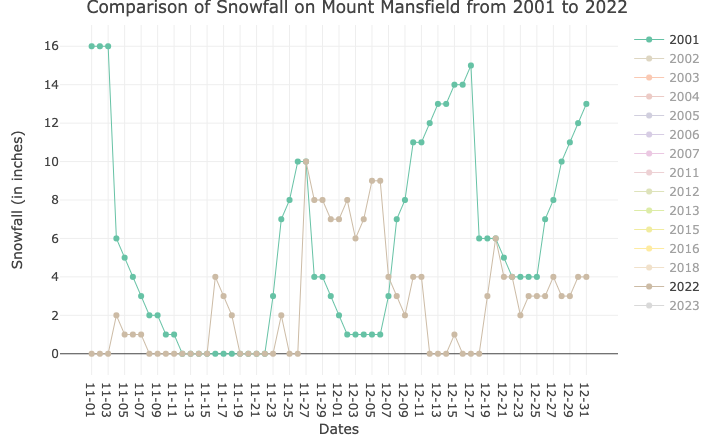
Pictured: Comparing Snowfall on Mount Mansfield in November and December
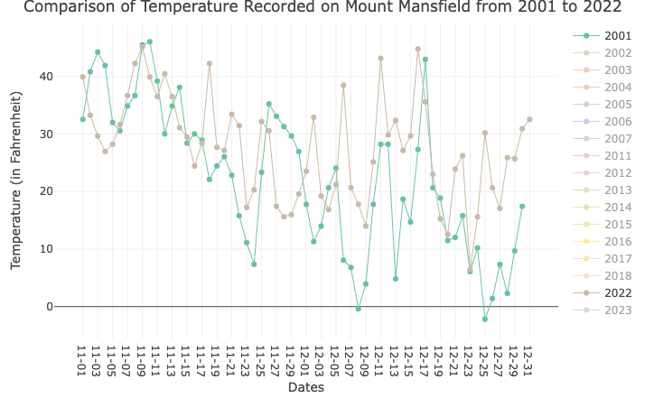
Pictured: Comparing Temperature on Mount Mansfield in November and December
Details on the code used to create these plots can be found below:
Code
#Taking a look at daily snowfall from 2001 - 2023plot_ly(tidy_vt_snow_winter_years, x =~month_day, y =~snowfall, color =~as.factor(year), type ="scatter",mode ="lines+markers",line =list(width =1)) %>%layout(title ="Comparison of Snowfall on Mount Mansfield from 2001 to 2022",xaxis =list(title ="Dates"),yaxis =list(title ="Snowfall (in inches)"),legend =list(title ="Year"))
Code
#Taking a look at daily temperature from 2001 - 2023plot_ly(tidy_vt_temp_winter_years, x =~month_day, y =~temp, color =~as.factor(year), type ="scatter",mode ="lines+markers",line =list(width =1)) %>%layout(title ="Comparison of Temperature Recorded on Mount Mansfield from 2001 to 2022",xaxis =list(title ="Dates"),yaxis =list(title ="Temperature (in Fahrenheit)"),legend =list(title ="Year"))
I noticed that for temperature (in Fahrenheit), recent years of lowest values (specifically 2021 and 2022) that have been recorded are significantly higher than the lows measured in non-recent years (specifically 2001 and 2002). I also noticed that the peaks for snowfall recorded (in inches) tend to be much higher in the non-recent years (specifically 2001 and 2002). These two generalizations indicates that there may indeed be some differences in snowfall and temperature over the duration of time I have plotted.
I also noticed that there are a few years where data is missing, so I will omit those years from my analysis.
With these conclusions, I’m able to narrow down my focus to sample and group a number of years to compare in my hypothesis testing. To do this, I will categorize my years into “recent” and “non-recent” based on the data that is available.Given there was quite sparse data for many years, with some years not even being in the dataset, I was limited to working with the years that did have complete data. Interestingly, I could not find information on the organization’s website about why there were years missing or there were many NAs in the years that did have data.
Therefore, for this analysis, I will indicate the “recent” grouping as years 2015, 2016, and 2022 since those years have the most data. The “non-recent” grouping I will indicate as years 2001, 2022, and 2003 due to completeness in the data. Time to do some statistical analyses!
My Statistical Analyses
For my question, I will consider differences in climate conditions (snowfall and temperature) in Vermont and conduct summary statistics, a simple hypothesis test, a linear regression model, and a decomposition. I am aiming to determine if there is a statistically significant difference between the recent and non-recent years for both snowfall and temperature variables.
Summary Statistics
By bucketing my data into two groups, recent and non-recent (more information on why and how below), I can do an initial comparison of my two sample groups:
Snowfall Table:
Years
Mean (inches)
Standard Deviation (inches)
Median (inches)
Recent (2015,2016, 2022)
3.92
8.37
0
Non-Recent (2001, 2002, 2003)
8.61
11.48
0
Temperature Table:
Years
Mean (F)
Standard Deviation (F)
Median (F)
Recent (2015,2016, 2022)
42.28
18.83
44.06
Non-Recent (2001, 2002, 2003)
39.64
19.43
41.18
With these initial summary statistics, I can already see differences in the means, standard deviation, and median for my two groups. Taking a look at the snowfall data, the mean and standard deviation snowfall values (in inches) are much lower in the recent years grouping than non-recent. This aligns with my initial assumption that snowfall in recent years is, on average, much more sparse than previous years. When comparing the temperature statistics, I also noted mean temperature values (in Fahrenheit) to be much higher in the recent years grouping than the non-recent years. This also aligns with my initial assumption that temperatures are increasing. Given temperature and snowfall are highly correlated due to our understanding of snowfall’s reliance on the temperature threshold of 32 degrees Fahrenheit, it would make sense that with higher average temperature values the average snowfall would decrease since they are inversely related. Now that I have some initial summary statistics, I am going to run my hypothesis test!
Code for calculating these values below:
Code
# I'm going to join my two datasets together first:vt_data <-merge(tidy_vt_snow_winter, tidy_vt_temps_winter, by ='date')#Cleaning my datasetsvt_data <- vt_data %>%select(-"Min.x", -"10%.x",-"30%.x", -"70%.x", -"90%.x", -"Max.x", -"Median (POR).x", -"year.x", -"month.x", -"Min.y",-"10%.y", -"30%.y",-"70%.y",-"90%.y",-"Max.y",-"Median (POR).y") %>%rename(year ="year.y", month ="month.y") %>%#removing and renaming columns to tidy this dataframe filter( year %in%c('2001', '2002', '2003', '2015', '2016','2022'))vt_data#Summarizing the snowfall and temperature data for recent years:vt_recent <- vt_data %>%filter(year %in%c('2015', '2016', '2022'))vt_recent_stats <- vt_recent %>%summarise(snow_mean =mean(snowfall, na.rm =TRUE), snow_sd =sd(snowfall, na.rm =TRUE), snow_median =median(snowfall, na.rm =TRUE),temp_mean =mean(temp, na.rm =TRUE), temp_sd =sd(temp, na.rm =TRUE), temp_median =median(temp, na.rm =TRUE))#visualizing the stats table:vt_recent_stats#Summarizing the snowfall and temperature data before for non-recent years:vt_non_recent <- vt_data %>%filter(year %in%c('2001', '2002', '2003'))vt_non_recent_stats <- vt_non_recent %>%summarise(snow_mean =mean(snowfall, na.rm =TRUE), snow_sd =sd(snowfall, na.rm =TRUE), snow_median =median(snowfall, na.rm =TRUE),temp_mean =mean(temp, na.rm =TRUE), temp_sd =sd(temp, na.rm =TRUE), temp_median =median(temp, na.rm =TRUE))#visualizing the stats table:vt_non_recent_stats
Checking OLS Assumptions
I am aiming to draw conclusions about the Vermont snow climate using this sample from Mount Mansfield of temperature and snowfall observations. In order to move forward with my statistical analyses and draw conclusions, I need to check my OLS assumptions. To do that, I am going to plot the distribution of my snowfall and temperature samples to check for normality before continuing.
Temperature Distribution
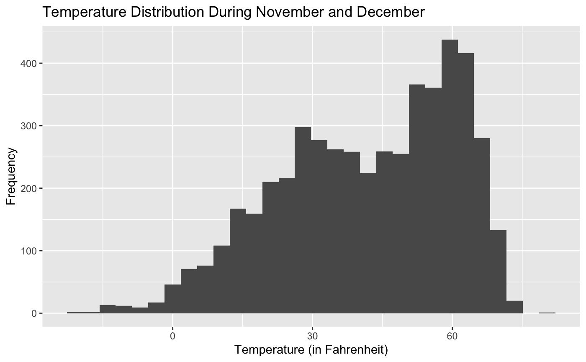
Pictured: Visualizing Temperature Distribution
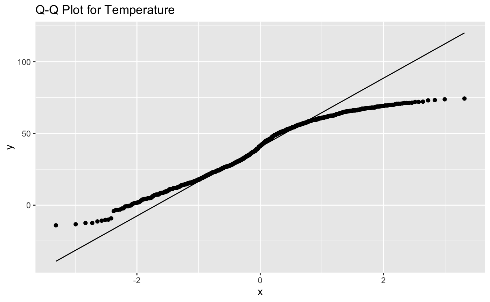
Pictured: Visualizing Temperature QQ Plot
The temperature data is fairly symmetric and this distribution looks to be somewhat normally distributed, which means I’m not going to transform my data since it is relatively normal.
Code
#Temperature Distributions Check#Non recent yearsvt_hist_non <-ggplot(vt_non_recent) +geom_histogram(aes(x = temp)) +labs(title ="Recent Temperature Distribution During November and December",x ="Temperature (in Fahrenheit)",y ="Frequency" )vt_hist_non
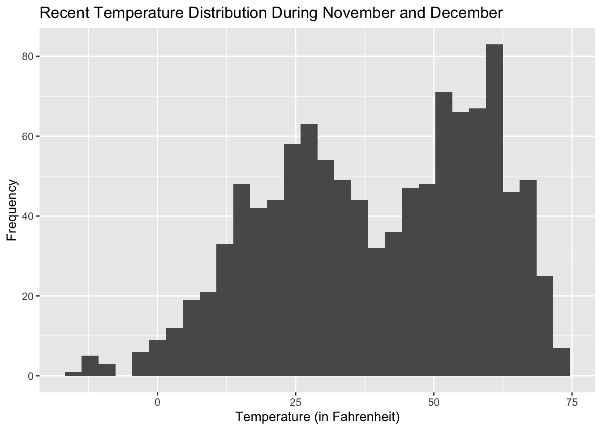
Code
#Recent yearsvt_hist_recent <-ggplot(vt_non_recent) +geom_histogram(aes(x = temp)) +labs(title ="Recent Temperature Distribution During November and December",x ="Temperature (in Fahrenheit)",y ="Frequency" )vt_hist_recent
Code
#QQ Plot for Temperatureggplot(vt_data, aes(sample = temp)) +geom_qq() +geom_qq_line() +ggtitle("Q-Q Plot for Temperature")
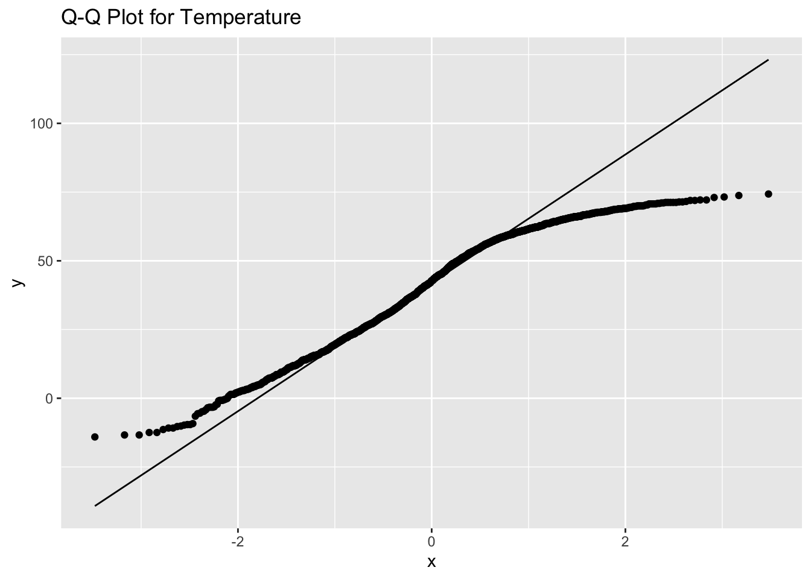
Snowfall Distribution
Pictured: Visualizing Snowfall Distribution
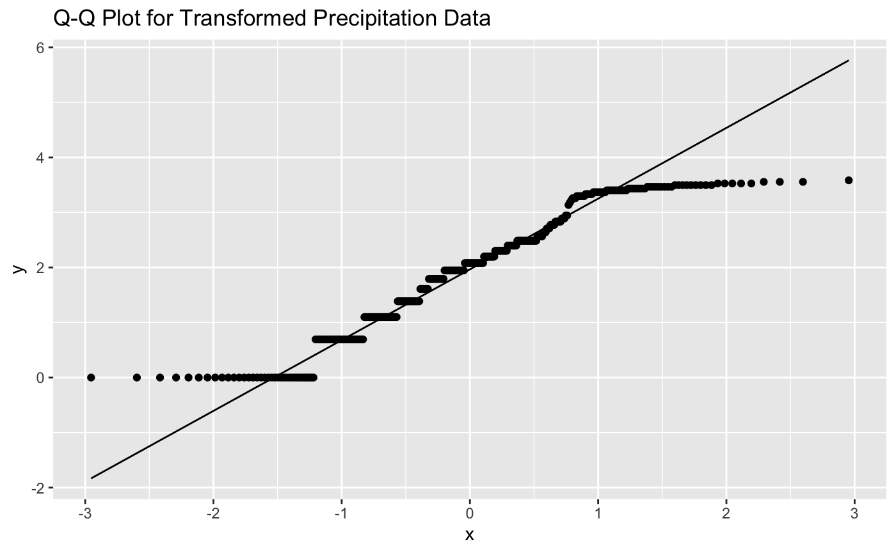
Pictured: Transformed Snowfall QQ Plot
Interesting! The snowfall data was is fairly skewed to the right and there is a large right tail. This makes sense given the sheer volume of zeros in the data. Given this does not show me a normal distribution, I transformed the data using log() and created a QQ plot to see how how this non-normal distribution fits. Although my QQ plot is not perfect, I am happy with moving forward given the number of low values in my dataset (0s and 1s) which makes sense contextually since we are dealing with daily snowfall.
Code
#Creating histograms of my snowfall distribution to check for normality:#Snowfall Distributions Check#Non recent yearsvt_hist_non <-ggplot(vt_non_recent) +geom_histogram(aes(x = snowfall)) +labs(title ="Recent Snowfall Distribution During November and December",x ="Snowfall (inches)",y ="Frequency" )vt_hist_non
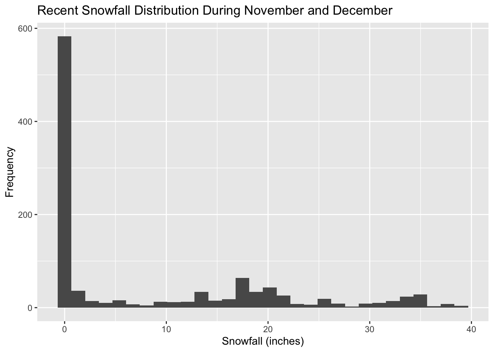
Code
#Recent yearsvt_hist_recent <-ggplot(vt_non_recent) +geom_histogram(aes(x = snowfall)) +labs(title ="Recent Snowfall Distribution During November and December",x ="Snowfall (inches)",y ="Frequency" )vt_hist_recent
Code
#Both recent and non-recent look relatively similar in their underlying distributions, so I'm going to plot just recent data.##QQ Plot for Snowfallggplot(vt_recent, aes(sample = snowfall)) +geom_qq() +geom_qq_line() +ggtitle("Q-Q Plot for Snowfall")
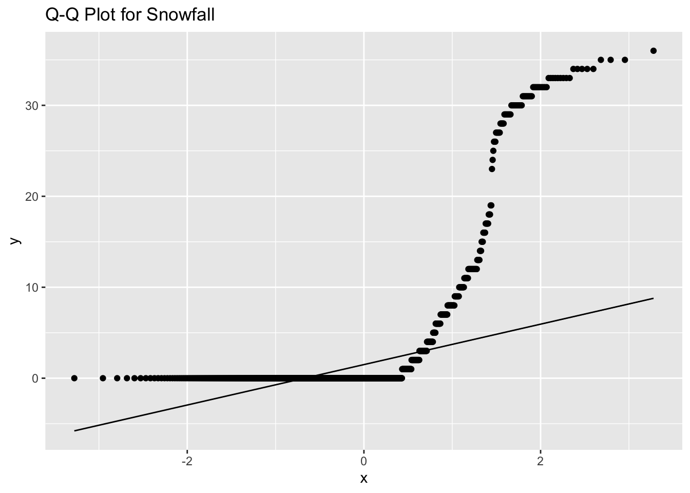
Code
##Transformed QQ Plot for Snowfalllog_snowfall <-log(vt_recent$snowfall)log_snowfall_non <-log(vt_non_recent$snowfall)ggplot(vt_recent, aes(sample = log_snowfall)) +geom_qq() +geom_qq_line() +ggtitle("Q-Q Plot for Transformed Precipitation Data")
Now that I have checked for normality and updated data where it was needed, I’m going to go ahead and run my hypothesis tests.
Hypothesis Testing
Snowfall Hypothesis
Is the mean snowfall in inches different in recent years than in previous years?
My null and alternative hypotheses:
\[H_{O}: \mu_{recent} - \mu_{nonrecent} = 0\]
\[H_{A}: \mu_{recent} - \mu_{nonrecent} \neq 0\]
Code
#Categorizing datavt_data$category <-ifelse(vt_data$year %in%c(2015, 2016, 2022), "recent", "not")#Running a t.test on the filtered data:result <-t.test(snowfall ~ category, data = vt_data, conf.level =0.95)print(result)#Extracting my confidence intervalconf_interval <- result$conf.intprint(paste('I am 95% confident the range', round(conf_interval[1], 2), 'and', round(conf_interval[2], 2), 'contains the true population difference between recent and non recent years for average snowfall in inches on Mount Mansfield.'))
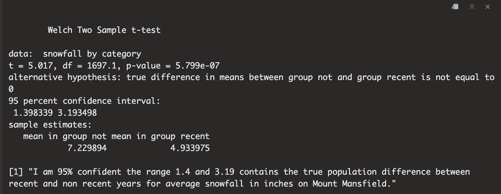
Pictured: Welch’s Two Sample T Test Results
To conclude, my Welch’s two sample t test generates a p value of .000000058 with a significance level of .05. In this case, I would reject the null hypothesis and this result is statistically significant at the .05 significance level. I have strong evidence to suggest that the observed difference between snowfall in recent years and non-recent years is unlikely to have occurred by random chance alone.
Considerations for other variables that could influence this analysis includes wind speeds at the weather station, el nino/la nina years, and the extraction of N/As. Given this analysis was completed using one weather station for duration of 20 years, I’d like to acknowledge that changes could have occurred to the monitor’s position, measurement variability, and quality since snowfall is a quite sensitive variable.
Temperature Hypothesis
Is the mean temperature in Fahrenheit different in recent years than in previous years?
My null and alternative hypotheses:
\[H_{O}: \mu_{recent} - \mu_{nonrecent} = 0\]
\[H_{A}: \mu_{recent} - \mu_{nonrecent} \neq 0\]
Code
#Categorizing datavt_data$category <-ifelse(vt_data$year %in%c(2015, 2016, 2022), "recent", "not")#Running a t.test on the filtered data:result <-t.test(temp ~ category, data = vt_data, conf.level =0.95)print(result)#Extract confidence intervalconf_interval <- result$conf.intprint(paste('I am 95% confident the range', round(conf_interval[1], 2), 'and', round(conf_interval[2], 2), 'contains the true population difference between recent and non recent years for average temperature in F on Mount Mansfield.'))
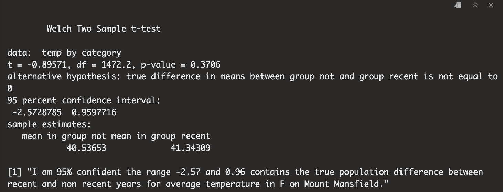 To conclude, my Welch’s two sample t test generates a p value of .3706 with a significance level of .05. In this case, I would fail to reject the null hypothesis with this result not being statistically significant at the .05 significance level. I do not have strong evidence to suggest that the observed difference between snowfall in recent years and non-recent years is unlikely to have occurred by random chance alone.
Considerations for other variables that could influence this analysis includes percipitation at the weather station, el nino/la nina years, relative humidity, and the extraction of N/As. Given this analysis was completed using one weather station for duration of 20 years, I’d like to acknowledge that changes could have occurred to the monitor’s position, measurement variability, and quality since snowfall is a quite sensitive variable.
Linear Regression
I decided to expand my dataset again and include all years to compare the relationship between snowfall and temperature. Knowing that this relationship should be fairly intuitive since snowfall relies on a temperature threshold to exist (proven scientifically), I wanted to see the relationship that is present in this data.
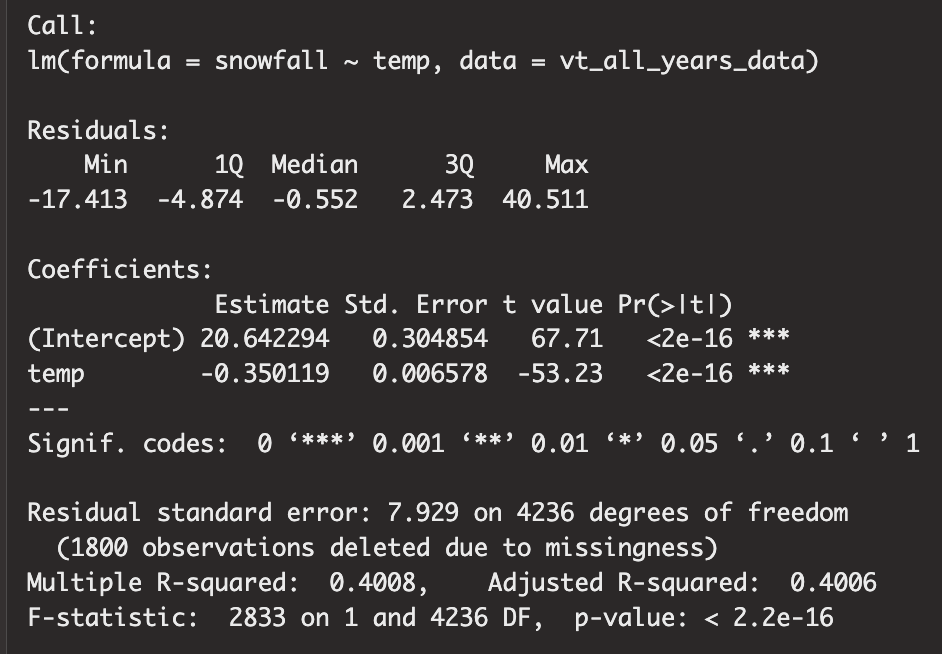
Pictured: Running a Linear Regression with Results
Intercept: When the average temperature is 0 degrees Fahrenheit, the snowfall is, on average, 20.6 inches between 2001-2023.
Slope: For every 1 degree increase in temperature each day, the rate of snowfall decreases by .35.
R-Squared: With an r-squared value of .40, I can conclude that 40% of snowfall in inches can be explained by temperature alone.
Code for this analysis below:
Code
# I'm going to join my larger datasets together first:vt_all_years_data <-merge(tidy_vt_snow_winter, tidy_vt_temps_winter, by ='date')#taking a look at the data:vt_all_years_data <- vt_all_years_data %>%select(-"Min.x", -"10%.x",-"30%.x", -"70%.x", -"90%.x", -"Max.x", -"Median (POR).x", -"year.x", -"month.x", -"Min.y",-"10%.y", -"30%.y",-"70%.y",-"90%.y",-"Max.y",-"Median (POR).y") %>%rename(year ="year.y", month ="month.y")vt_all_years_data#aggregating all years of data for snowfall and temp:#running a simple regression on snowfall and temperature variables for my sampling yearssummary(lm(snowfall ~ temp, data = vt_all_years_data))
Conclusion & Future Considerations
To conclude, and as shown above, there is no evidence to conclude statistically significant changes in average temperature data on Mount Mansfield from the years 2001 - 2023. There is evidence to suggest statistically significant changes in average snowfall in inches on Mount Mansfield from 2001 - 2023. However, as I also outlined above, there are a number of considerations with this data that could limit making any conclusions, including other variables present when gathering this data and missing years of data.
These conclusions align with my initial presumption that snowfall was declining in Vermont through my experiences skiing in recent years and also aligns with recent news stating the winter tourism industry is suffering from lack of snow. This analysis could be helpful for future ski industry stakeholders in determining how to budget and maintain mountains in the future. This analysis could also be helpful in determining mitigation plans for areas where snowfall is a significant contributor to spring water sources for agriculture, wildlife, and humans. It’s important we acknowledge these changes to our environment and consider what the future of our world may look like with less snowfall.
In a future analysis, this data would be helpful in doing the following:
Time series forecasting to predict future snowfall patterns
Event analysis by understanding specific events in the time series like massive storms, El Niño/La Niña considerations
A seasonal decomposition with a larger time frame of data
Expanding the analysis regionally, nationally, or globally with more data
Sources:
The Boston Globe. (2023, August 3). Climate change and winter: What the future holds. https://www.bostonglobe.com/2023/08/03/science/climate-change-winter/